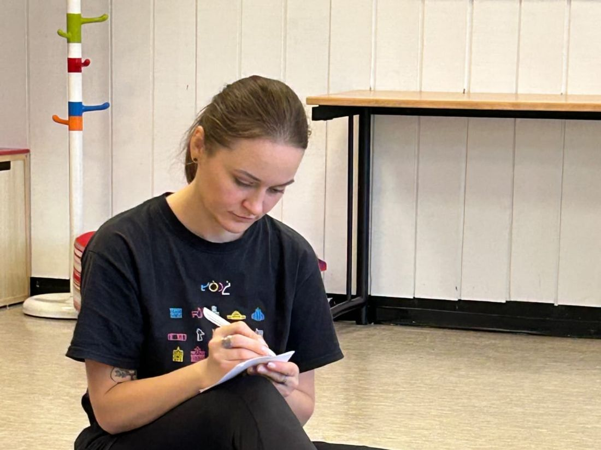
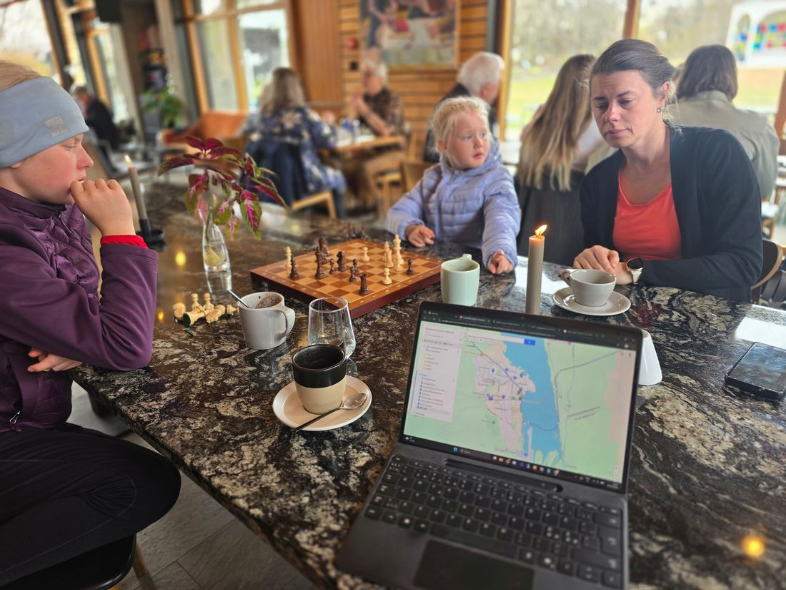
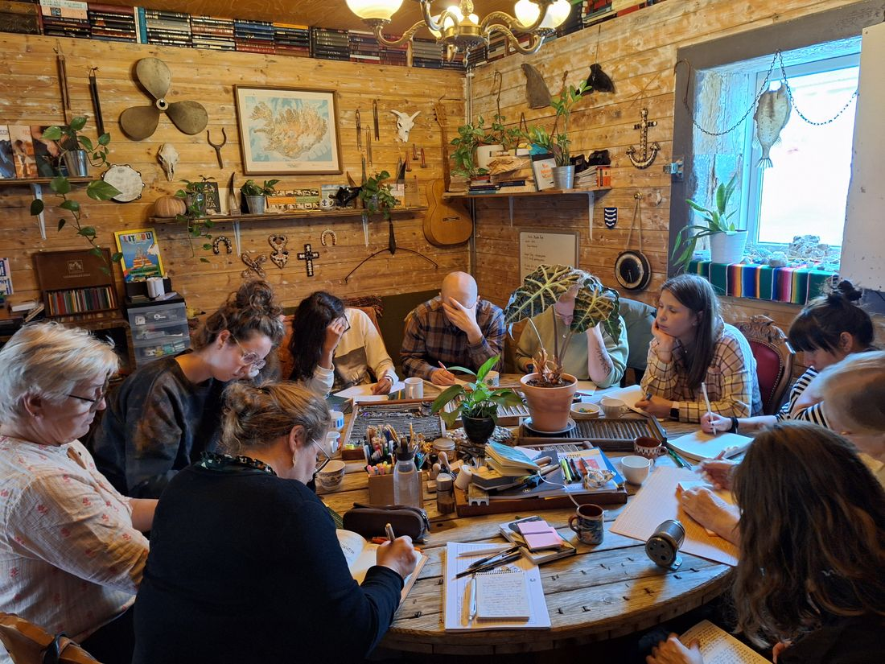
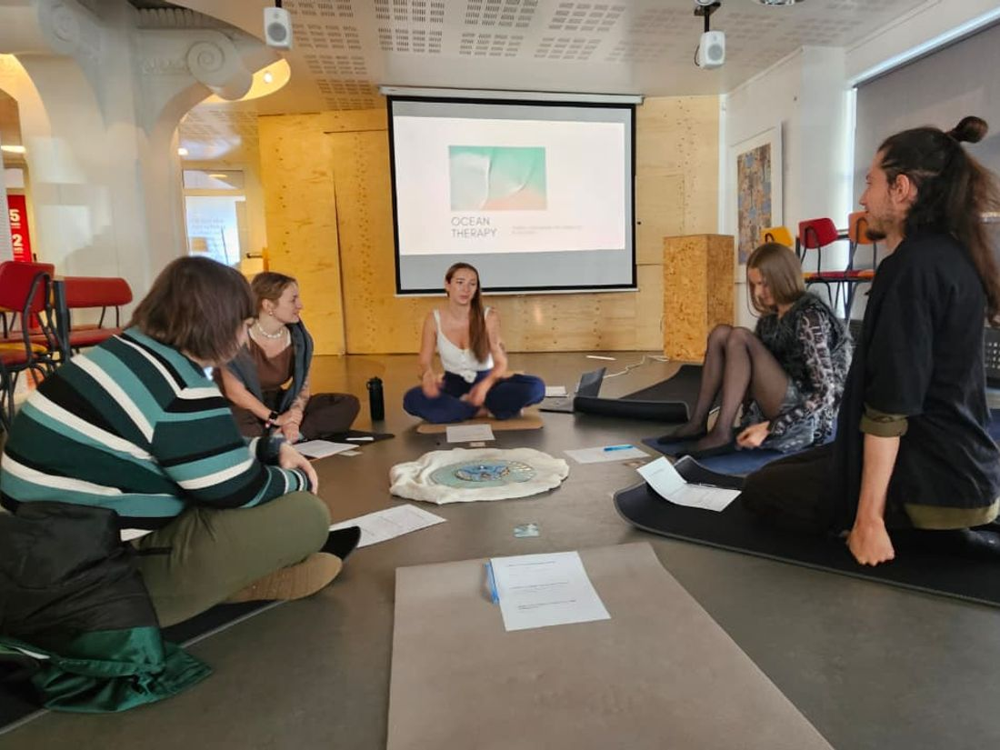
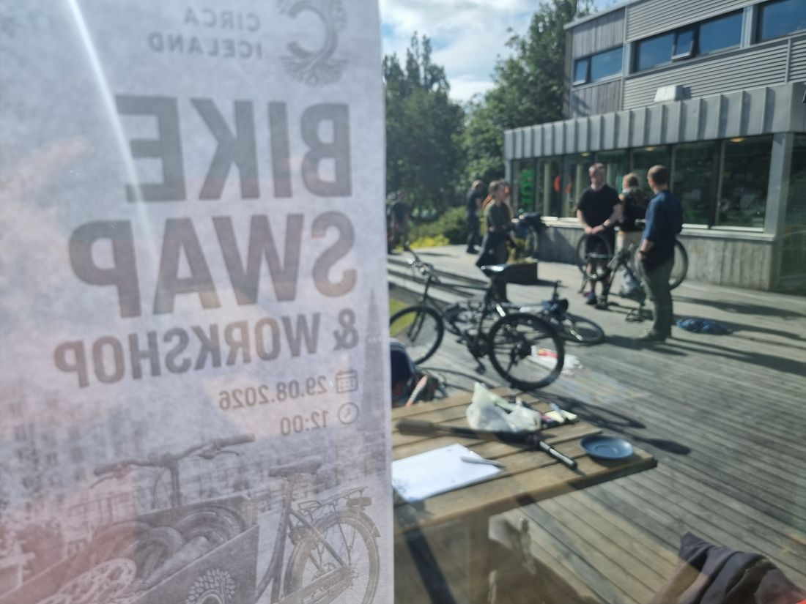

A 19-month international project connecting sustainable travel, mental
well-being and community — turning everyday journeys into journeys of impact.
Sólheimar · Steinninn / CC BY 4.0
Timeline
19-month project · ongoing
Location
Iceland & Slovakia
Partners
Circa · Slovak Eco Quality
Funding
Co-funded by the EU · Erasmus+ KA210
About the project
Eco Rangers — Journeys of Impact is Circa's flagship collaboration with
Slovak Eco Quality (SEQ), a 19-month programme exploring how we travel, how we care for
our own well-being, and how both are tied to the health of the planet.
Working with adult educators and community members, the project co-creates practical,
reusable tools that help people move through the world with a lighter footprint and a
deeper connection to place. Learning happens in both countries — from training weeks in
Slovakia to hands-on activities at Iceland's Sólheimar Eco Village — and lands back home
through local workshops and community events.
Highlights
Training programmes in Slovakia and at Sólheimar Eco Village, Iceland
Twenty local workshops and collaborative sustainable-city mapping
A Sustainable Travel Guide, training methods and comic posters as open outputs
Circa's Reykjavík clothes swap & repair café, bringing circular living to the community
Watch: the Reykjavík repair café
Clothes swap & repair workshop · Reykjavík
Gallery
Sustainable places around Akureyri
As part of Eco Rangers, we mapped sustainable spots around Akureyri — places to repair,
reuse, eat and travel more lightly. Watch how we did it, then explore the interactive map.
Mapping sustainable places around Akureyri
Sustainable map of Ísafjörður
Our Westfjords mapping workshop built a companion map for Ísafjörður and its surroundings —
bike shops, second-hand stores, a local brewery and quiet natural spots worth a slower visit.
Across 2026, Eco Rangers came to life through a series of hands-on
workshops all over Iceland — from clothing and bike repair to city mapping, reflective
writing and well-being sessions. Here is the full programme.
21 Mar 2026From Circa's YouTube channel
Reykjavík · Dalur HI Hostel
SWAP Market & Upcycling Corner
A community clothing swap and repair session — exchanging garments and learning basic
mending, showing that lighter travel starts with reusing what we already own.
Clothing swapRepair
2 May 2026

Reykjavík · with Kamila Walijewska
Morning Practice — Yourself & the Planet
A mindful morning of meditation and reflection, exploring how caring for ourselves and
caring for the planet feed one another.
Well-beingMindfulness
14–15 May 2026

Akureyri · North Iceland
City Mapping — Akureyri
Two days mapping the sustainable side of North Iceland on foot and by car — the places
that make mindful, low-impact living easier. Explore the interactive map above.
MappingSustainable travel
4 Aug 2026

Patreksfjörður · with Write it Out
Write it Out — Reflective Writing
Simple journaling techniques for well-being and emotional regulation while travelling —
connection over consumption, with just a notebook and pen.
JournalingWell-being
27 Aug 2026

Reykjavík · with Kristýna
Ocean Therapy
Reflection, creative writing and guided meditation on our bond with the sea — and the
small everyday actions that help protect it.
Well-beingOcean
14–15 Aug 2026Flateyri · Christian Bickel / CC BY-SA 2.0 DE
Ísafjörður · Westfjords
Mapping Ísafjörður
A companion mapping workshop in the Westfjords — finding repair shops, thrift stores and
natural spots, and reflecting on sustainable travel. Explore the interactive map above.
MappingWestfjords
25 Apr 2026
Torfastaðir · with Monika Sara Puscion
A Journey Through Time — Becoming a Good Ancestor
A guided “time-travel” visualization on long-term thinking and intergenerational
responsibility, linking today's choices to past and future generations.
ReflectionWell-being
29 Aug 2026

Reykjavík · Repair café
Bike Swap & Workshop
A bicycle-parts swap paired with a hands-on repair café — building basic maintenance
confidence and championing cycling as accessible, sustainable transport.
RepairSustainable mobility
Project outputs
Everything Eco Rangers produced is free to download, share and reuse —
in English, Icelandic and Slovak. All files are PDFs, and each link shows its size so you
know what you are opening.
Sustainable Travel Guide
56 pages · 3 languages
The project's main publication — a practical look at travelling with a lighter
footprint: transport, packing, food, accommodation and the everyday choices that add
up, written for travellers and educators alike.
Eco Rangers: Facilitating Impactful Journeys — the full training-course
methodology, with ready-to-run sessions such as Emotional Awareness While Traveling,
Pack Smart, The Ripple Effect and The Council of All Beings, including timings,
materials and facilitation notes.
Step-by-step methodology for the eleven community workshops — from repair cafés and
clothing swaps to ocean therapy, plogging and mapping local green spaces — so any
organisation can run them.
Produced under Erasmus+ small-scale partnership
2024-2-IS01-KA210-ADU-000265496, co-funded by the European Union and
administered by the Icelandic National Agency (Rannsóknamiðstöð Íslands). These outputs
are free to use and share — please credit Circa and Slovak Eco Quality.


 From Circa's YouTube channel
From Circa's YouTube channel